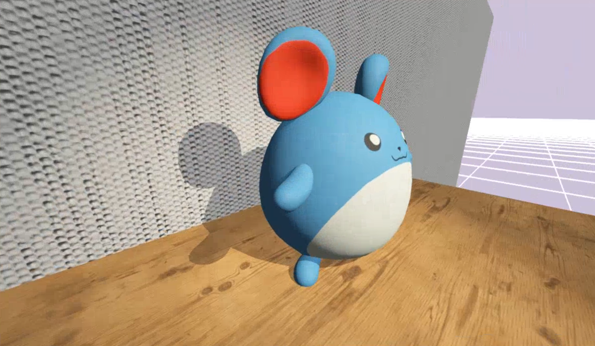

Given the length of time I spent working on this project (around a year as of December 2024),
its goal has shifted a bit. The first and foremost goal though was to have an opportunity to
progress my skills in tools programming, learn and get experience with graphics, and to discover
how different aspects of a game engine come together. As the project progressed though I hoped for
an opportunity to use it to make a game with a team, and worked on making the experience as good
as possible for that goal.
Click here to view the engine's source code.
I had no idea what type of game this engine would be used for. I was hoping for it to be used for a 5 month group student capstone project, but I wouldn't know what type of game would be made in it until that project started, if I was even able to get things to a state where people would be comfortable using the engine for that. So the things I prioritised were core features that would be useful for most if not all games.
3D Object Heirarchy
Dynamic UI System
Compute Particle System
Event Parallelisation
Gamepad Support
Audio Support
Forward Rendered PBR
Post-processing Stack
Shadowmapping
Bloom
FXAA
Material Editor
Art Preview & Importer
Transform Gizmos
Object Picking
Clean & Dockable UI
OpenGL
Glad
GLFW
GLM
STB Image
Soloud
NLohmann's JSON
Editor Only
ImGui
Assimp
Tiny File Dialogues
LearnOpenGL was an extremely helpful resource when it came to learning about graphics and getting started implementing the rendering for my engine, right up till getting PBR implemented. Once I was working on getting PBR implemented I found this really helpful document made by Frostbite , on how they transitioned their engine to PBR, and it was super informative on the history and different ways of implementing the techniques.
Of all the general graphics features I implemented, PBR was one of the hardest. Not to write the shader code, but to understand what was going on. I generally like to understand what I'm doing and this posed a bit of a challenge for me. Through some research and time spent with the resources at my disposal I feel I was able to come to an understanding of roughly how it works, and I definitely understand how to use it. I learned I needed to be comfortable with not understanding the equations fully though.
The engine's art importer was revamped for the game Busharium, to support the needs of the artists. The goal of the art importer is to preview how an asset looks before commiting to it. Artists could see the assets in the lighting of the game, manipulate the camera settings, and apply materials, all before importing it. Then once the artist was ready they could click the 'cook' button, and all the mesh files would be converted to an internal format and connected via a prefab, with the applied materials saved. The revamping of the art importer was guided by the needs of the artists on the project. Before the revamp, it was capable of some of these things, but it didn't have a preview window or of course ways to set up and control that window.

The UI System was developed for the game Busharium, and so was made to fit the needs of that project. The game's UI requirements were fairly standard for the most part, requiring elements in the corner to allow the player to see controls, see which tile they have selected, and see a notification when they've unlocked new variants. There were two more unique parts though, being the radial menus for selecting a tile, and the stickersheet which would be animated at certain gameplay milestones.

The other consideration we had was accounting for different resolutions. Accounting for different sizes but same aspect ratio was achieved by rendering the UI Sprites in Clip Space as opposed to Screen Space. I ended up having 2 values to dictate the position of the sprites, an anchor and an offset. The offset, unlike the anchor, would have its X component be multiplied by the aspect of the screen. This way designers could set up sprites to be positioned exactly how they'd like them when it came to different aspect ratios.
The way I implemented object picking was fairly simple. I didn't have any kind of physics set up, but I did have render targets set up. So what I did was render the scene, and each pixel would render the guid of the object its a part of to the screen. Then when clicking on the scene view in the editor, I get what the guid is of the pixel being hovered, then select the matching game object. This method means that object picking lines up 1 to 1 with how objects are rendered, which is exactly what I wanted.
Setting up transform gizmos was a big quality of life feature. By far the easier of the two to get working translation. I simply rendered 3 cones along each axis, and when the user would click and hold on them I'd translate the object along that axis by an amount relative to the mouse's displacement to the start position and the distance of the camera. There were a few transformation matrices involved to get between the different view spaces, but nothing I hadn't handled before when rendering objects. I managed to get this working for axes in world-space, and axes relative to the object's rotation.
The much harder process was getting rotation gizmos going. You can see my scribbled notes above from when I was trying
to wrap my head around how I was going to do it. As shown in the notes I simplify the problem by using transformation
matrices to handle the problem relative to the selected axis of rotation. Once I have that I treat the axis as the normal
of a plane of rotation, where I project the cursor position and rotate the object based on the difference in angle from
the start position. This took a lot of debugging to get right, but really expanded my confidence with this type of maths.
Another thing I learned as part of this was more abstract. Upon sharing it with some people I knew I found out there is
an easy to implement library (ImGuizmo) that does a lot of this for you. From then I have made sure to search out for open-source
libraries for common problems. Despite the fact I could have saved a lot of time with an already made solution, I do
feel this experience was very beneficial for my maths skills and confidence.
Something I found very early on was how little good resources there are online for compute shaders. And even once getting a basic compute shader working it was challenging researching how to get shader buffer objects working so I could send arbitrary data to the gpu, rather than relying on samplers. Eventually through reading many different papers and discussing how compute shaders worked with someone more experienced with them I was able to get it all working. This was definitely good practice researching something with little to no documentation, and using resources only tangentially related to my use case to learn how to do what I needed.
When implementing billboarding I decided to use geometry shaders, even though I knew they are renowned for not being very performant. I did this as it would be a simpler starting point since geometry shaders were essentially made with this in mind (generating new vertices on the fly). However, as expected, this heavily reduced performance. In the future I would like to update the systems to calculate the billboard point positions in the compute shader.

I came to notice that uploading all of the initial data to the gpu takes a lot of time. In fact it is the most noticeable performance issue the particle systems have. With large amounts of particles it leads to noticeable hitches, from tiny stutters on low end machines at 100,000+ particles, to freezes of almost a second on most devices with 1,000,000+ particles. I’m going to look into preloading the particle systems’ initial data and playing them with a t value rather than incrementing the initial data, so that the data doesn’t need to be re-initialised and re-sent to the gpu each time the system is restarted.

This game was made by a team of 6, with me as the sole programmer. We also had Alicia Hayashi and Blake Andrews as
designers, Phoenix Marsh and Pierce Siddans as artists, and Isabella Verduci as composer. The game was developed over
the course of 5 months and made within my engine.
Click here to read about making Busharium, to play it, or to view source code.
After the conclusion of the Busharium game project, I asked my team members if they'd be willing to be interviewed on their thoughts, feelings, and takeaways from working in my engine.
A common theme in the feedback was that the engine was easy to use, simple to navigate, and wasn't bogged down in bloat. This can be attributed to the tooling really all being built for purpose, and the team was really positive about that. I received a lot of positive feedback on how well I communicated, and how easy it was to talk through how possible it would be for me to implement certain things. The team was very surprised and happy with how quick and snappy the load times were in the engine. It was also appreciated how quickly I was able to tend to bugs, including the occassional crashes early in the project, and how helpful it was that I was there to ask questions at any time.
The biggest sore point was the lack of ability for designers to rapidly prototype ideas in engine. They managed to make do with paper prototypes and the game we were making lended itself well to that, but it was noticed that without scripting support for the designers, there was a limited amount of prototyping that could occur, since I'd be the one doing it all. It was mentioned that it would be good to have an in-engine filesystem to use instead of always opening up the built-in windows one, as well as having engine-specific filetype icons, and thats something I can certainly look into. Another key point was the fact there wasn't a lot of documentation. Since a lot of things the team were using was specific to the game, and it was a small team I figured I could get away with not much written documentation. I think that was a bit of a mistake, and although it didn't hurt this project, its certainly something I will improve on for the future.
The team was generally really happy to have had the opportunity to work within a custom engine. Even with some of the drawbacks,
they mention being glad to have had the experience. The team kept coming back to how simple and nice it was to work in something
where all of the tools have a purpose that they can utilise, and not need to worry about things that aren't there for them.
Alicia in particular mentioned how interesting it was for her being able to ask and discuss how I implemented different things,
and getting to see things built up for the team. The team definitely realised and felt how much effort I put into communicating with
them on their needs, and working together to see what I could do to support them.
Click here for the full transcriptions of the audio interviews I did with my team.
It feels a bit weird doing a post mortem on the engine since I plan to continue working on it, but given I managed to make a game in it with a team, this feels like a pretty good milestone to touch on. Overall I'm really happy with how the engine has come out so far. I really enjoyed architecting and making the engine's systems, and developing the tools to accompany them. It was an especially great opportunity getting to work with a team to make a game in it. Not only was it fulfilling getting to see my engine used by the team to make a fun game, but it also fueled so many new features and updates to the engine. Something I'll be working on soon is integrating some of the systems I made for the game into the core engine, such as the UI system. Going forward into the future I'd really like to continue working on this engine and make more games in it.

Working on my own engine project has been a great opportunity to expand on my tooling skills as I'd hoped, and I've learned so much about graphics, and the internals of making an engine tick. I was able to learn how to debug graphics with render doc, and tackle undefined behaviour. I learned some of the flaws with using an inheritance-based system for game objects, and will be moving to an entity component system going forward. I learned how to use compute shaders and set up shader buffer objects for my particle system. And I gained so much practice with my maths skills. I'm so glad I decided to work on this project, I think it really helped me grow as a programmer, and it was really fun.